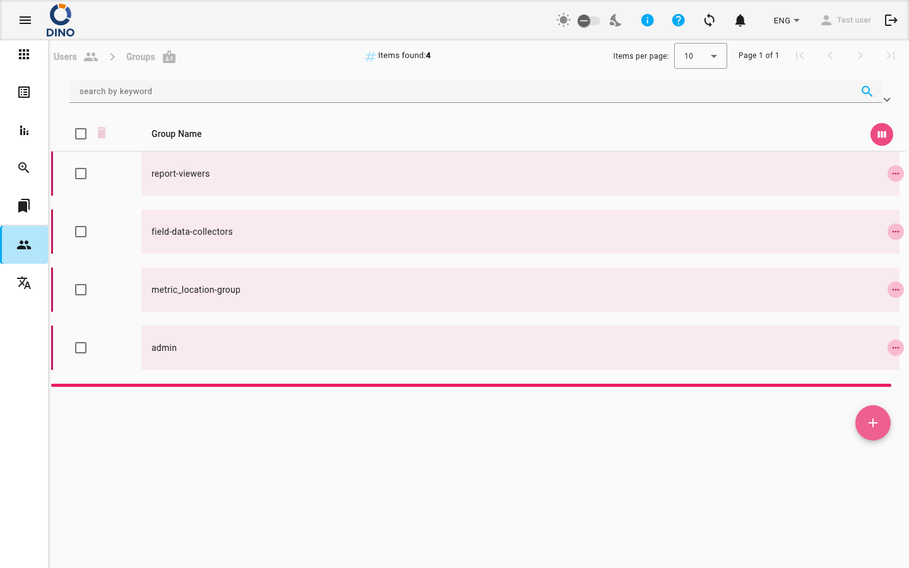

title: Lista de grupos description: Administre grupos de usuarios en Dino: vea, cree, edite y elimine grupos de permisos con roles, formularios, informes y métricas asignados.
Lista de grupos
La página Lista de grupos muestra todos los grupos de usuarios en Dino. Desde aquí puede ver, editar, eliminar y crear grupos. Cada grupo define un conjunto de permisos y reglas de acceso vinculando un rol de usuario con esquemas de formulario específicos, esquemas de informe, estados de formulario y tipos de métrica (como áreas, casos, proyectos, ubicaciones u organizaciones).

Descripción general de la lista
La tabla muestra las siguientes columnas:
- Nombre del grupo – el nombre del grupo de usuario (visible por defecto).
- ID – identificador interno (oculto por defecto).
- Fecha de creación – cuándo se creó el grupo (oculta por defecto).
Puede personalizar qué columnas aparecen haciendo clic en el icono view_week en el encabezado de la tabla.
Búsqueda y filtrado
Use la barra de búsqueda en la parte superior de la página para filtrar grupos por palabra clave. El panel Filtros (expandible) le permite reducir la lista por:
- Rango de fechas (desde/hasta)
- Proyecto, ubicación, área, caso, organización y otros filtros disponibles
También puede guardar y cargar presets de filtros usando el administrador de presets.
Acciones sobre los grupos
Cada fila tiene tres iconos de acción a la derecha:
- visibility – Ver detalles del grupo (abre el editor en modo solo lectura)
- create – Editar propiedades del grupo
- delete – Eliminar el grupo (requiere confirmación)
Al hacer clic en una fila se expande una sección de detalles que muestra información adicional o elementos anidados (si los hay).
Crear un nuevo grupo
- Haga clic en el botón flotante + en la parte inferior derecha de la pantalla.
- En el cuadro de diálogo del editor que se abre, ingrese un Nombre de grupo.
- En el panel Elementos disponibles, navegue por las pestañas para seleccionar:
- Rol de usuario (obligatorio: debe elegir exactamente un rol)
- Esquemas de formulario
- Esquemas de informe
- Estados de formulario
- Tipos de métrica (Área, Caso, Proyecto, Ubicación, Organización) – si están activos
- Haga clic en el icono add junto a cada elemento para moverlo al panel Elementos del grupo.
- Haga clic en Guardar.
Opción «Todos»
Para tipos de métrica y otras categorías, puede ver una opción «Todos …». Seleccionarla aplica la restricción a todos los elementos de ese tipo.
Editar o ver un grupo
- En la tabla, haga clic en el icono create (editar) o visibility (ver) del grupo que desea modificar.
- En el cuadro de diálogo del editor, puede:
- Cambiar el Nombre del grupo.
- Agregar o eliminar elementos de cualquier pestaña (solo en modo edición).
- Eliminar elementos haciendo clic en el icono delete junto a ellos.
- Haga clic en Guardar para aplicar los cambios (el modo vista solo muestra un botón Cerrar).
Eliminar un grupo
- Haga clic en el icono delete del grupo.
- Confirme la eliminación en el cuadro de diálogo que aparece.
Acción irreversible
Eliminar un grupo no se puede deshacer. Asegúrese de que ningún usuario dependa del grupo antes de eliminarlo.
Páginas relacionadas
- Lista de usuarios – administrar cuentas de usuario individuales y sus asignaciones a grupos.
- Métricas – configurar tipos de métrica que pueden asignarse a grupos (áreas, casos, proyectos, etc.).
- Esquemas de formulario – crear y editar esquemas de formulario que se pueden vincular a grupos.
- Esquemas de informe – administrar esquemas de informe disponibles para grupos.
- Descripción general de la interfaz – conocer la navegación y el diseño general.